SIGNALS
- 1 Introduction
- 2 Signals
- 3 Signal Groups
- 3 Additional fields
- 4 Functions
- 5 Units
- 6 Categories
1. Introduction
In this section we will specify how signal administration can be performed.
Next, we will define each of the sections that make up the signal administration.
2 Signals
2.1 Configuration
From the control panel we can access the “Signals” section.
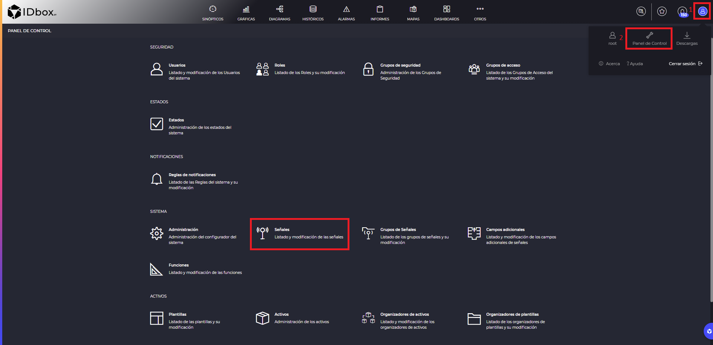
This will allow us to list all the signals we have available or search for a specific one using the search engine.
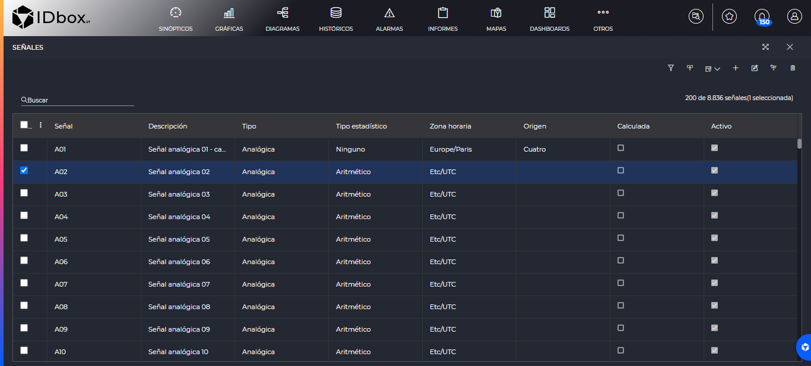
The add button will allow us to add new signals to the system. If we select a signal we can edit it with the button or delete it with . In addition we can quickly associate signals to a signal group with the button by marking one or several signals at the same time.
On the other hand, the button allows exporting an Excel document in two ways: with the data of the selected signals or a base template, which in both cases can be imported later to the system by means of the button to make additions, massive modifications of signals or both.
Adding or editing a signal will open a window to modify its data.
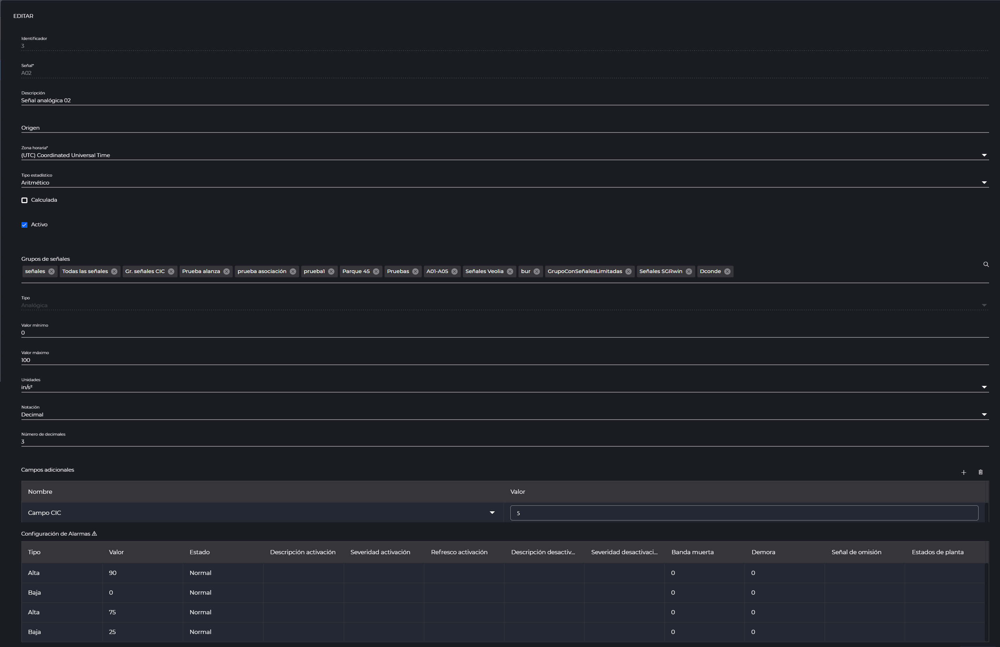
The fields in this section are explained here:
- Identifier: The signal identifier, automatically assigned by the system.
- Signal: The name of the signal.
- Description: Description of the signal.
- Origin: Information about the data origin of the signal.
- Time Zone: It will allow us to change the time zone to which the signal belongs.
- Statistical type: It will allow us to select if the signal statistic is “Arithmetic” or “Time-weighted”.
- Calculated: Indicates whether the signal is calculated or not.
- Active: If checked, it will indicate that the signal is active in the system.
- Signal groups: The signal groups to which the signal belongs. Pressing it will open a selector to select them.
- Type: Indicates whether the signal is “Analog”, “Digital” of type “Text” or “Discrete”.
If the signal is analog, the following fields will also be displayed:
- Minimum value: Minimum value of the signal.
- Maximum value: Maximum value of the signal.
- Units: Combo containing possible types of units to assign to the signal.
- Notation: Whether its values will be represented in “Decimal” or “Scientific” notation.
- Number of decimal places: Indicates how many decimal places the signal will be represented.
In the case of a digital signal we can establish:
- True value: Text that represents that the signal has a true value.
- False value: Text that represents that the signal has a false value.
Finally, in the case of discrete signals we can select a category.
In the last grid we will see the configuration of the alarms.
Only in the case that we have entered to edit the signal from the section catalog edition from the service configurator.
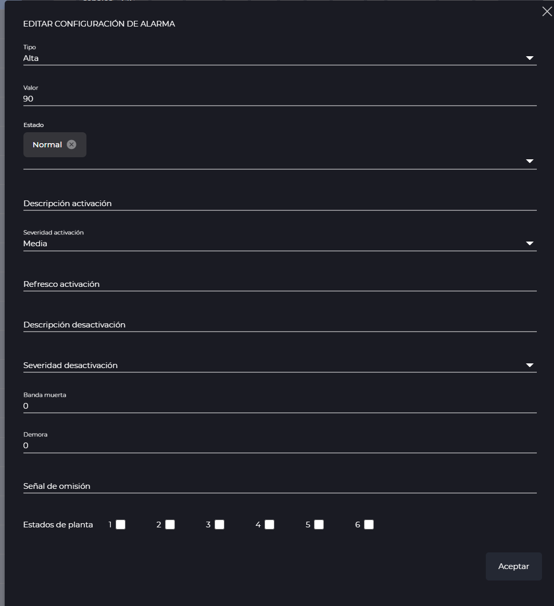
The alarm configuration fields are as follows:
- Type: type of alarm to be monitored. The possible values are “Value”, “High”, “Low” and “Status”:
*Value: If the value of the alarm is exactly the value we specify in the “Value” field, it will be triggered. *High: If the alarm value exceeds the threshold of the “Value” field, the alarm will be triggered. *Low: As soon as the alarm value is lower than the “Value” field, the alarm will be triggered. *Status: If the alarm goes to the status specified in the “Value” field, the alarm will be triggered.
- Value: Field that will vary according to the type. It will be a number if the type is “Value”, “High” or “Low” and one or several states if it is of type “Status”.
- State: State that the alarm will have when it is issued.
- Activation description: Message given to the alarm when it is activated.
- Activation severity: Severity corresponding to the alarm that is activated. Possible values are “Trivial”, “Low”, “Medium”, “High” or “Critical”.
- Activation refresh: Time, in seconds. If since the alarm was activated, this time passes with the alarm active, the alarm acknowledgement will be requested again.
- Deactivation description: Description that will be given when the alarm is deactivated.
- Deactivation severity: Severity corresponding to the alarm when it is deactivated. Possible values are “Trivial”, “Low”, “Medium”, “High” or “Critical”.
- Deadband: Differential margin to recover the alarm value.
- Delay: Time that the alarm has to be fulfilled before it is actually triggered.
- Omission signal: This field indicates the digital signal that would omit that alarm when its value is true.
- Plant states: System states in which the alarm definition would be applied.
To save the signal in its entirety, click on the “Accept” button.
2.2 Information
The fields previously shown in the configuration are also available in visualization mode along more details through the signal information tab. It can be opened via the information icon located close to the signal as shown in the following example of the main explorer view.
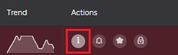
Once it is opened, as can be seen in the following image, the information tab is split into several sections that can be navigated through the menu located on the left side as well as a summary located at the top containing its name, description, type and a shortcut for its edition.
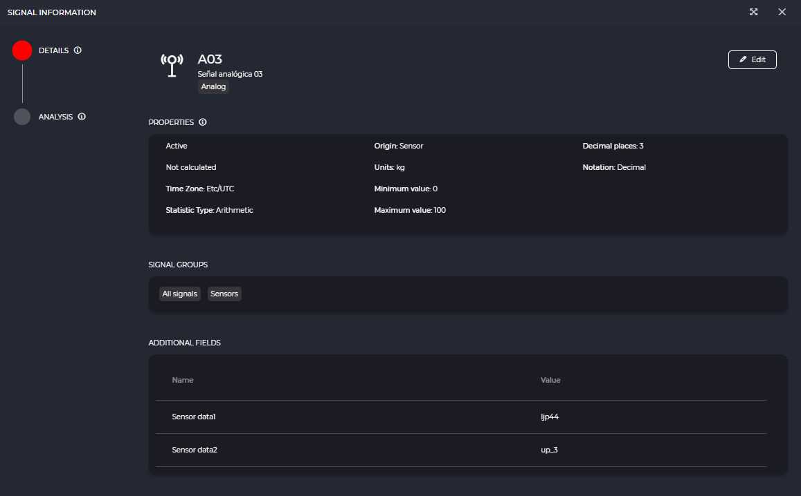
Based on the signal type, different options will be available depending on its features. The following list describes each of them.
- Details: shows the properties and features, groups to which it belongs, additional fields and configured alarms.
- Documents: a list of documents classified by its type - based on user permissions and security group - in which this signal is being used.
- Analysis: the result of the application of different analysis techniques on the data to obtain information on the behavior of the signal over time is displayed.
-
Statistical analysis is available for analog, digital and discrete signals. Values are calculated through the application of different functions to the data that provide information about its historical behaviour. The number of available statistics varies according to the type of the signal on which they are calculated.
-
Data distribution graph shows how signal values are distributed according to the number of observations for the selected time period. The amount of data used for the representation is a sample summarized by mark.
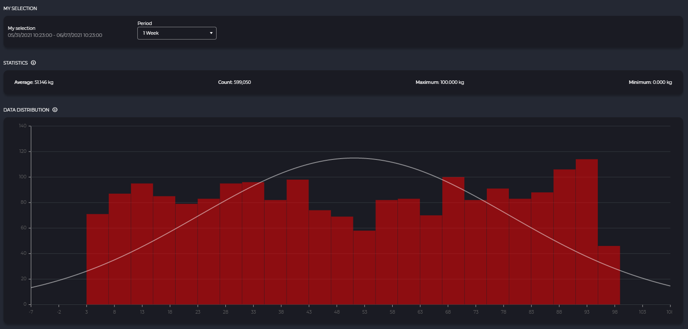
3 Signal Groups
In this section we can manage the groups of signals that exist in the system. It can be accessed from the control panel:
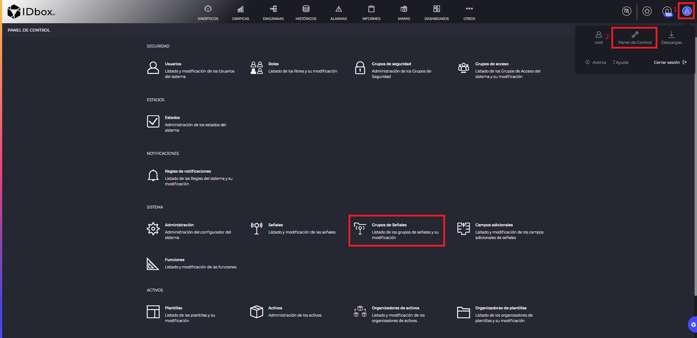
This will take us to a grid with the groups of signals registered. Using the search engine we will be able to filter a group of signals.
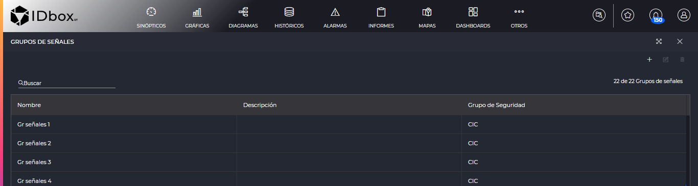
We will add a new group of signals using the add button. If we select a specific group, the options to edit or delete will be enabled.
By adding or editing we will enter the edit section of a signal group.
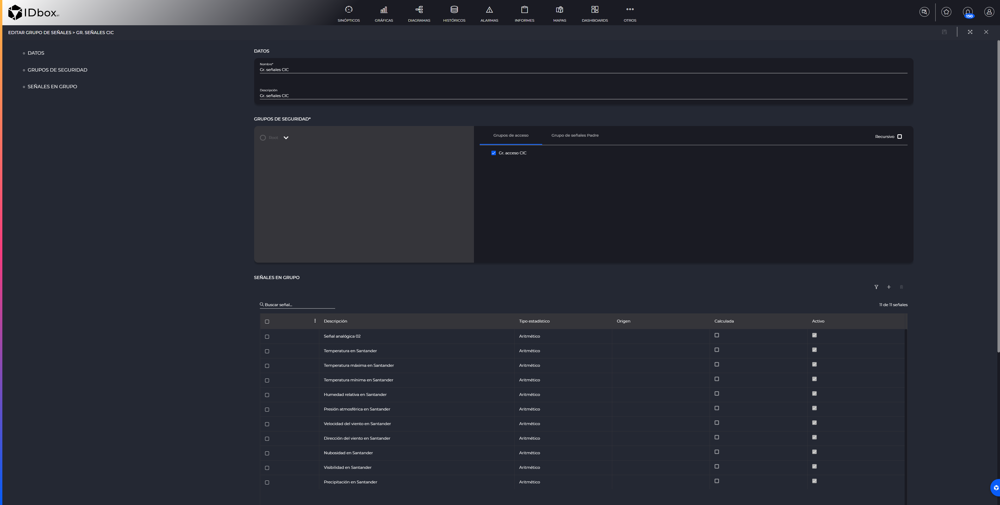
In this screen we can edit the following properties:
- Name: Name under which the group of signals will be displayed.
- Description: Description of the signal group.
- Security groups: Select an existing security group in which the signal group will be included. It is not possible to modify it once the group has already been created.
- Access groups: Indicate the access groups that will be able to view this group of signals.
- Parent signal group: List the other signal groups within the selected security group so that we can select which one will be its parent in the signal group hierarchy.
- Signals in group: Grid that will show us the signals that are in this signal group. We can add them by or remove them from the group by .
To save the signal group, click on the button in the toolbar.
3 Additional fields
In this section we can manage additional fields of the signals that exist in the system. It can be accessed from the control panel:
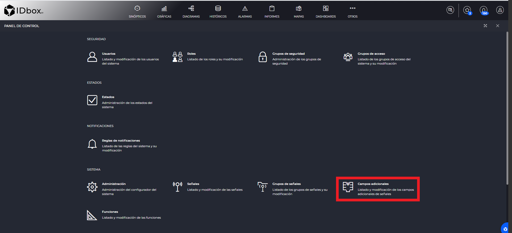
This will take us to the additional fields management window, on the left side we can select the security group from which we want to see the additional fields or mark that we want to see all the additional fields in the system.
Note: if we select “Show all additional fields in the system” we will not be able to add a new additional field.
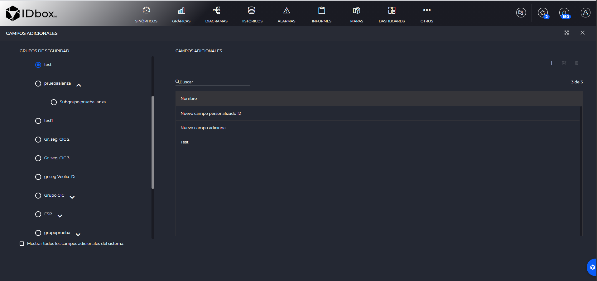
We will add a new additional field using the add button . Selecting an additional field will enable the options to edit or delete .
When adding a new additional field, a new row will be added to the additional fields table in which we must indicate the name we want to give to the new additional field.
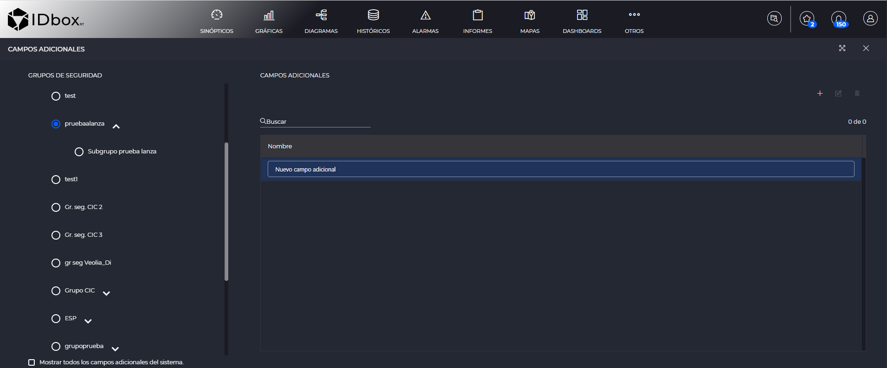
4 Functions
In this section we will be able to manage the functions that exist in the system. We can access it from the control panel:
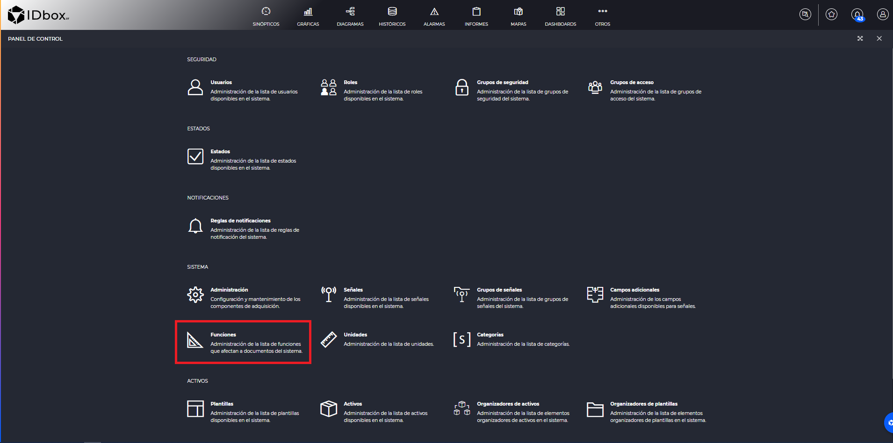
This will take us to a grid with the registered functions. Using the search engine we will be able to filter the functions.
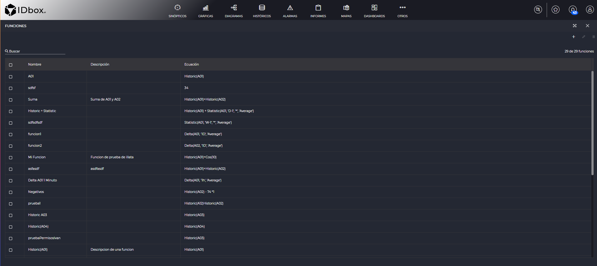
We will add a new function using the add button . Selecting a function will enable the editing and deleting options.
Adding or editing will open the edit section of a function.
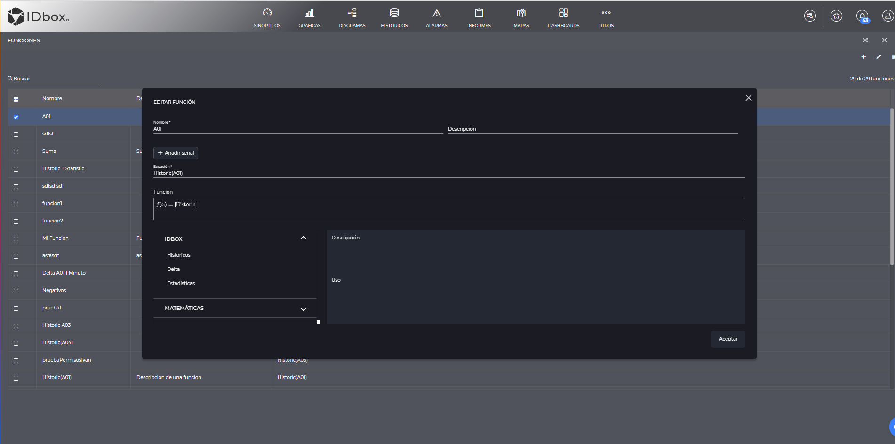
In this screen we can edit the following properties:
- Name: Name under which the function will be displayed.
- Description: Description of the function.
- Equation: We can add a signal that will be displayed as a history in the equation or operators found in the drop-down menu at the bottom.
To save the function, click on the button on the toolbar.
5 Units
In this section we will be able to manage the units that exist in the system. We can access it from the control panel:
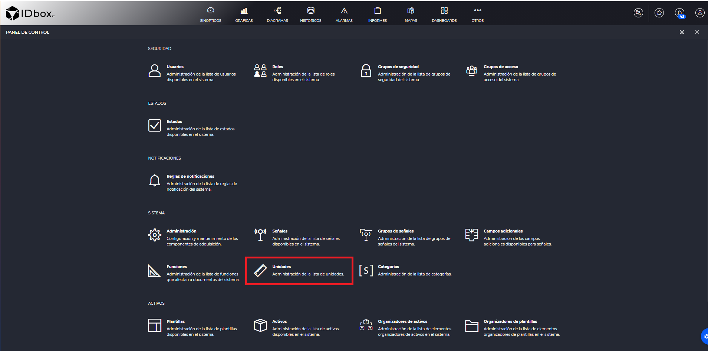
This will take us to a grid with the units registered. Using the search engine we can filter the units.
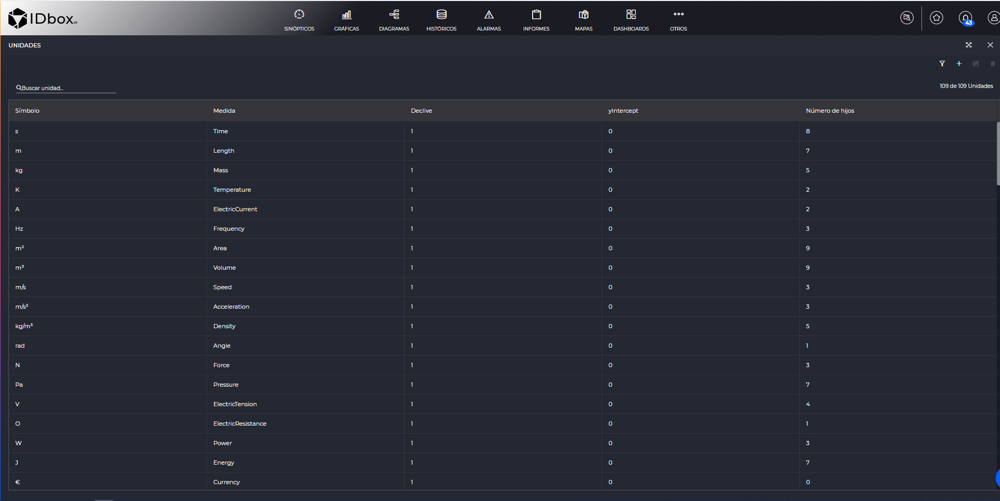
We will add a new unit using the add button . If we select a unit, the editing and deleting options will be enabled.
Adding or editing will open the edit section of a unit.
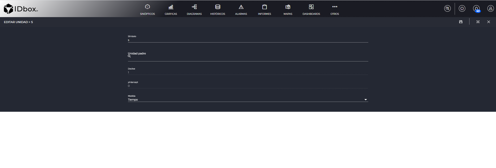
In this screen we can edit the following properties:
- Symbol: It is the symbol used to express the unit.
- Parent unit: It is the unit that the unit in creation/edition will depend on (Optional).
- Measurement: It is the type of measurement, if it has a parent unit it will have the measurement of the parent.
- Slope: It is the value by which the current unit must be multiplied to obtain the parent unit.
- yIntercept: In case the parent unit and the current unit do not coincide in the zero value, the difference between both is established. For example degrees Celsius would have yIntercept = -273.15, since the 0 of the parent unit (degrees Kelvin) is equivalent to -273.15°C.
To save the unit, click on the button on the toolbar.
6 Categories
In this section we will be able to manage the categories that exist in the system. We can access it from the control panel:
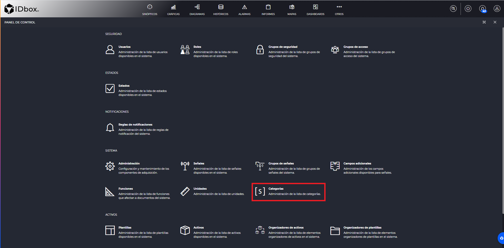
This will take us to a grid with the categories registered. Using the search engine we will be able to filter the categories.
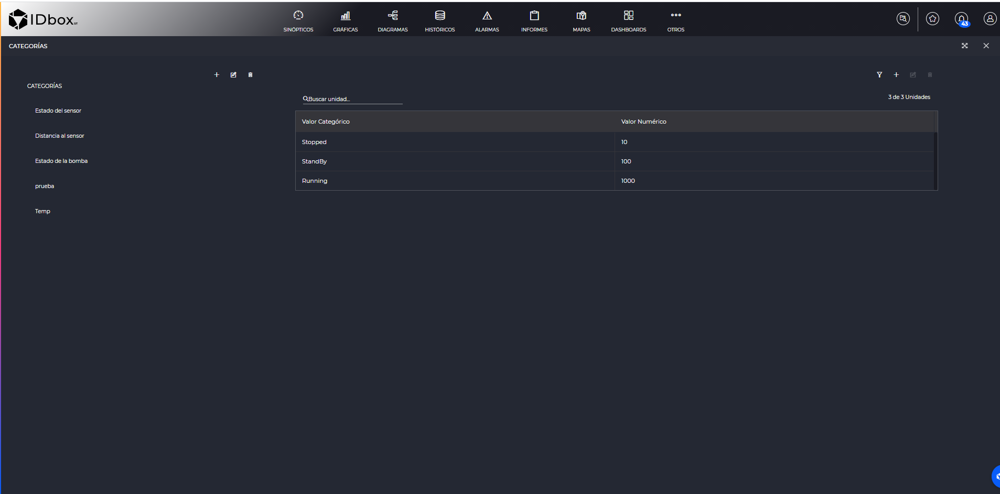
On the left side you will find the list of categories with buttons to add , edit and delete .
If there are categories, by default the first one will be selected when accessing this screen, which will cause the grid with the values of that category to be displayed on the right side of the screen.
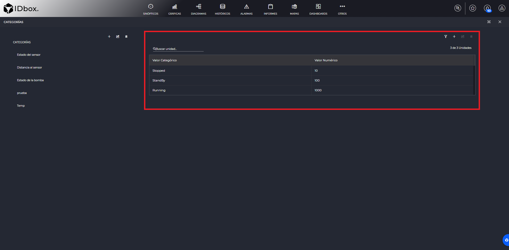
If we select the value of a category, the editing and deleting options will be enabled.
In this screen the edit and add actions will be performed within the same grid without the need to access a new screen, once you consider that you have finished editing/adding values you must use the save button that appears when editing/adding.
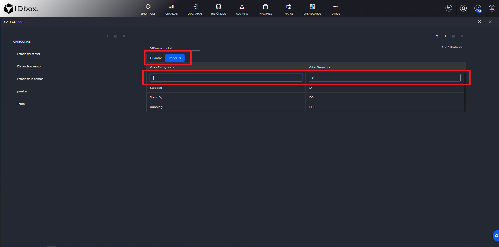
In this grid you will be able to edit: * Categorical Value: Text used to represent the value. * Numeric Value: Numeric key that identifies the value.